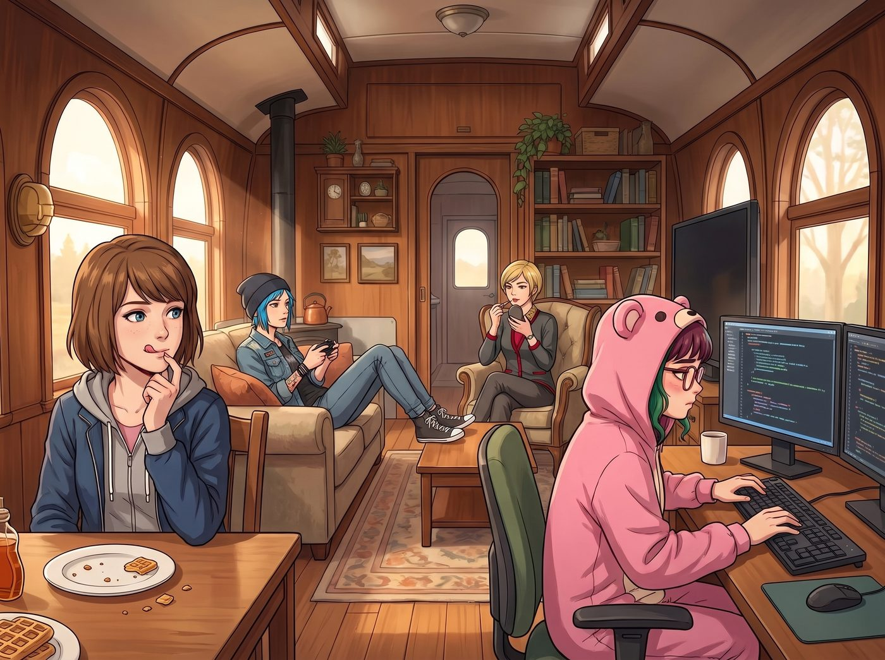
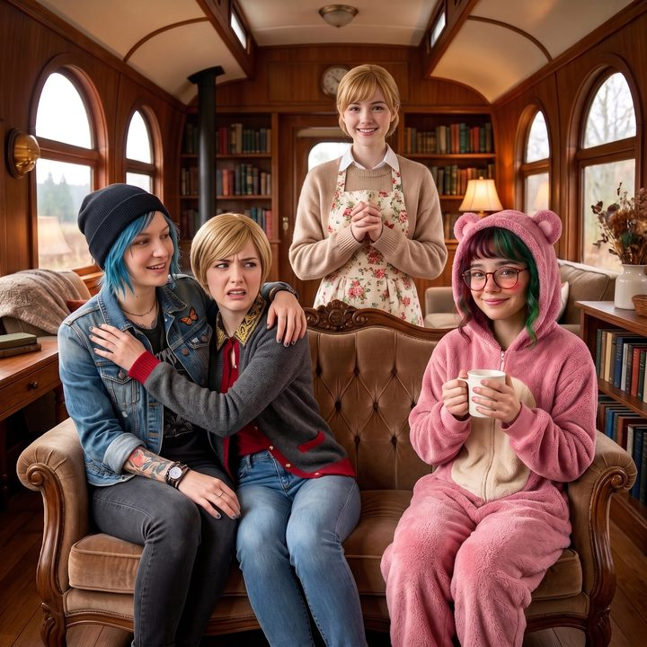
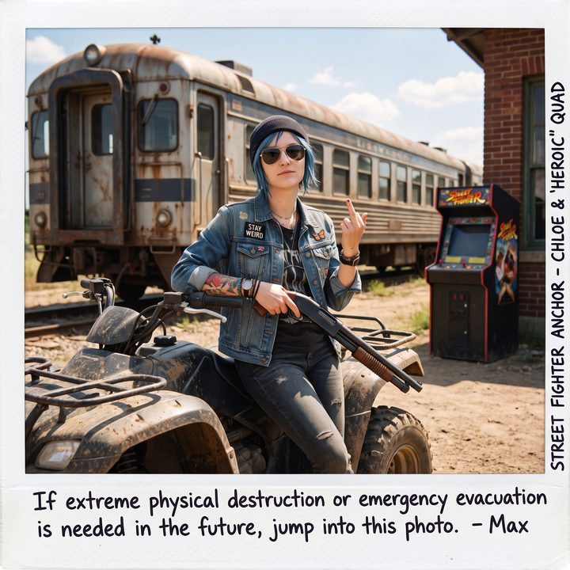
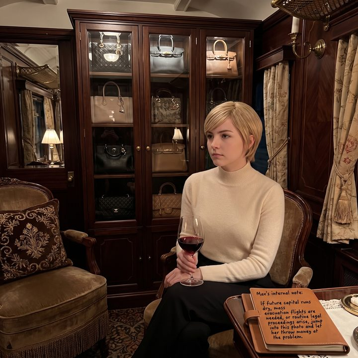
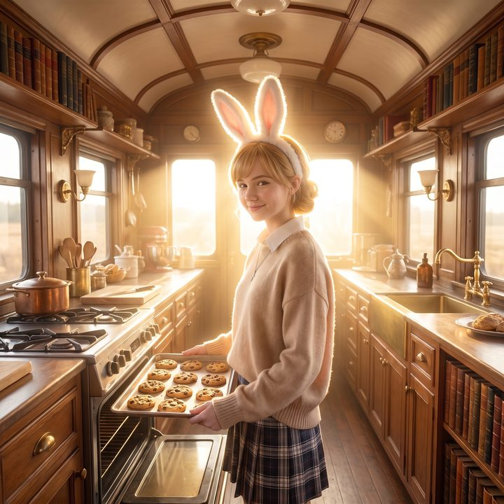

全家福與保險政策





吃完那頓伴隨著聯邦通訊部門調查風波的蔓越莓鬆餅後，Max 默默地舔掉嘴角的糖漿，看著正在沙發上跟遊戲伺服器重新連線的 Chloe，又看了看正在優雅補妝的 Victoria，以及那個又開始在雙螢幕前敲擊代碼的粉色小熊實習生。
身為一個曾經在阿卡迪亞灣經歷過無數次生死循環的時間旅者，Max 的大腦裡有一條極度敏銳的危險預警防線。
一、存檔點的必要性
她意識到了一個無比現實的問題：她們現在的生活，不僅牽扯到百萬美金的黑客勒索，甚至已經升級到了跟聯邦部門周旋、物理摧毀矽谷資產的駭人地步。在這種每天都在法律邊緣瘋狂試探的賽博廢土日常裡，總有一天，Lily 的行政黑魔法可能會失算，Victoria 的金錢可能會失效，而 Chloe 的暴力可能會碰壁。
如果哪天真的翻車了，她必須擁有一個完美的存檔點。只要有照片，她就能發動照片跳躍，把時間強制拉回到這個安全的早晨。
「大家停一下手邊的事。」Max 放下盤子，從沙發上拿起那台久經沙場的老式寶麗來相機，語氣無比認真，「過來，我們要拍一張全家福。就在這張沙發上。」
「現在？我才剛連上公會戰的伺服器！」Chloe 抱怨著，但還是乖乖放下了遊戲機。
「Maxine，妳最好有準備打光板。」Victoria 挑剔地看了一眼車廂的頂燈，「早晨的頂光會讓我的顴骨下方出現可怕的陰影，這會嚴重拉低我的視覺資產評級。」
「都給我坐好。」Max 不為所動，指揮著眾人。
在短暫的混亂後，一張極度不和諧卻又無比真實的全家福定格了：Chloe 沒大沒小地把手臂搭在 Victoria 的肩膀上，後者正露出極度嫌棄且試圖躲避的表情；Kate 繫著圍裙，站在沙發後面，雙手合十對著鏡頭露出天使般的微笑；而實習生 Lily 則乖巧地坐在最邊緣，雙手捧著一杯熱牛奶，對著鏡頭露出了一個標準得宛如AI生成的合規微笑。
「咔嚓——嗡。」底片吐出。Max 滿意地看著這張照片逐漸顯影。這不僅是一張美好的回憶，更是二號車廂的主存檔點。
二、四個錨點
但 Max 的神經依然緊繃著。「還沒完。」Max 換了一盒新底片，「為了……嗯，為了藝術專案，我還要給妳們每個人單獨拍一張肖像。就在妳們各自的工作區域。」
雙重保險，Max 在心裡默默對自己說。如果未來的某一天，團隊陷入了極度混亂的死局，全家福的存檔點可能會因為人數太多而導致跳躍後的變數無法控制。她需要單獨的錨點，以便在必要時，只回到某一個人身邊，進行精準的物理或心理干預。
第一張錨點：街頭霸王。Max 讓 Chloe 靠在那台剛剛立下汗馬功勞的四輪摩托車旁。Chloe 戴上墨鏡，單手把玩著那把短管步槍的彈匣，衝著鏡頭比了一個囂張的中指。Max 的內心備註：如果未來需要極端的物理破壞或緊急撤離，跳躍進這張照片。
第二張錨點：老錢名媛。Victoria 拒絕在沙發上拍照。她換上了一件高定的克什米爾羊絨衫，端著那杯勃根地紅酒，坐在她那個裝滿了包包的防塵衣櫃前。她強烈要求 Max 必須從左側四十五度角拍攝，以展現她完美的下顎線。Max 的內心備註：如果未來面臨資金斷裂、需要大規模撤離航班或面臨常規的法律訴訟，跳躍進這張照片，讓她去砸錢。
第三張錨點：聖光大天使。Kate 站在廚房的烤箱前，手裡端著一盤剛出爐的餅乾。陽光剛好透過車廂的防彈玻璃打在她毛茸茸的兔耳朵髮箍上，整個人散發著一種足以淨化一切罪惡的聖潔光芒。Max 的內心備註：如果未來的我們因為做了一堆違法勾當而瀕臨精神崩潰或道德淪喪，跳躍進這張照片，讓 Kate 的聖光給我們洗腦……不，洗滌靈魂。
三、敏銳的洞察
最後，Max 走到了 Lily 的雙螢幕工作台前。實習生已經切換回了工作模式，螢幕上正滾動著幾家基金公司的即時做空數據。
「Lily，看鏡頭。」Max 舉起相機。
Lily 停下手裡的工作，轉過頭。她推了推反光的圓框眼鏡，大眼睛靜靜地看著 Max 手裡那台寶麗來。
「Max 學姐，」Lily 突然開口，軟糯的聲音裡帶著一絲極度敏銳的洞察力，「從物理學與資訊留存的角度來看，寶麗來底片擁有不可篡改的時間戳記屬性。您在短時間內連續採集我們單獨的物理快照……請問，您這是在為這個團隊建立多維度的時間風險對沖矩陣嗎？」
Max 按在快門上的手指猛地僵住了。她的呼吸停滯了一秒，後背瞬間滲出了一層冷汗。
在這節車廂裡，除了 Chloe 早已知情之外，從來沒有人正式向 Lily 透露過她擁有時間倒轉超能力這件事，這個十九歲的實習生，居然單憑她單獨拍照這個動作的邏輯，就用極其恐怖的合規術語，精準地猜中了存檔點的核心本質！
「我……我只是為了我的攝影集累積素材而已。」Max 強裝鎮定，手指微微發抖地按下了快門，「咔嚓。」
「當然。」Lily 乖巧地笑了笑，沒有繼續追問。她看著那張吐出來的底片，語氣溫柔得令人毛骨悚然，「無論您的底片擁有什麼樣的隱藏協議，這都是非常優秀的災難備份意識。如果未來有一天，我的合規模型發生了無法挽回的邏輯崩潰，我希望能有某種機制，讓我重新計算一次。」
Max 的內心備註（瘋狂加粗）：如果未來有一天，這個小惡魔徹底失控，決定用她的黑魔法毀滅半個美國……跳躍進這張照片，然後在她敲下回車鍵之前，把她的牛奶打翻！
四、泥濘裡的回味
收集完所有的保險單後，Max 像保護核密碼箱一樣，將這五張寶麗來底片小心翼翼地夾進了她那本從不離身的日記本最深處。
指尖無意間碰到了昨晚那張在 Apex 物流營地拍下的、邊緣還沾著一點乾涸泥巴的寶麗來底片時，她停頓了一下。
雖然她在心裡對著 Lily 的照片瘋狂加粗了危險預警，雖然她總是扮演著這個瘋狂團隊裡的理智煞車皮，但如果真要誠實地面對自己的靈魂……Maxine Caulfield，其實是一個無可救藥的腎上腺素成癮者。
她可是那個為了救 Chloe，敢把整個阿卡迪亞灣和時空連續性都撕碎的女孩。在那個被機器狗追殺、被無人機殘骸砸了一頭一臉的雨夜裡，當恐懼退去後，殘留在她血液裡的，是一種讓她每個毛孔都張開的、極致的狂歡與自由。
Max 閉上眼睛，昨晚在四輪摩托車上的那個小插曲，像放電影一樣在腦海中無比清晰地重播。
當時，Chloe 猛扭油門，ATV 像一頭發狂的野豬一樣衝進了森林沒有鋪裝的泥濘小道。冰冷的雨水像刀子一樣打在臉上。Max 坐在後座，雙手死死地環抱住 Chloe 的腰，左手還緊緊攥著那張剛顯影的寶麗來底片，生怕它被狂風捲走。
「Maxine！！！」Chloe 頂著狂風和震耳欲聾的引擎轟鳴，轉過頭扯著嗓子大喊，「妳的底片還在嗎？！如果妳把它弄丟了，Lily 絕對會把我們倆的IP鎖到下個世紀！」
「還在！！被我塞進衣服裡了！！」Max 把臉貼在 Chloe 的皮夾克背上，大聲回應。
就在這時，前方出現了一個巨大的泥水坑。以 Chloe 的駕駛技術，她完全可以打個方向盤繞過去。但她是 Chloe Price。
「抓緊了，Super Max！！」Chloe 故意沒有減速，甚至還惡劣地補了一腳油門。
ATV粗壯的越野輪胎狠狠地碾過水坑，濺起了一道高達兩公尺的泥漿瀑布。嘩啦一聲，冰冷的泥水劈頭蓋臉地澆了兩人一身。
「Chloe！！妳這個白痴！！」Max 被凍得尖叫了一聲，但隨即，一陣無法控制的大笑聲從她的胸腔裡爆發出來。她把臉深深地埋進 Chloe 沾滿雨水、泥巴和機油味的皮夾克裡，笑得連眼淚都出來了。
在那個瞬間，沒有財團的追殺，沒有核反應爐的警報，也沒有實習生那令人窒息的合規法條。只有引擎的轟鳴、冰冷的雨水，以及身前這個無論世界變成什麼樣，都會帶著她一路狂飆的藍髮女孩。
「刺激嗎？！這可比在校園裡聽那種無聊的攝影課有趣多了吧？！」Chloe 在風中狂笑著回頭。
「閉嘴！看路！前面有棵樹！！」
Max 睜開眼，摸了摸日記本裡那張沾著泥巴的底片。她突然意識到，自己拍下這些存檔點，與其說是為了在翻車時倒轉時間去改變一切，不如說是為了證明這一切瘋狂的現實真切地存在過。她根本捨不得洗去昨晚那個泥濘的擁抱。